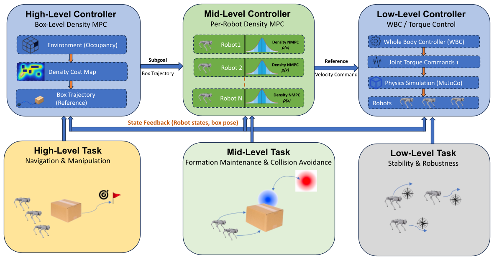
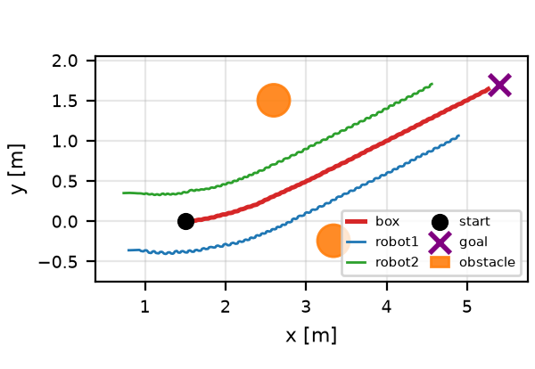
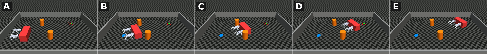
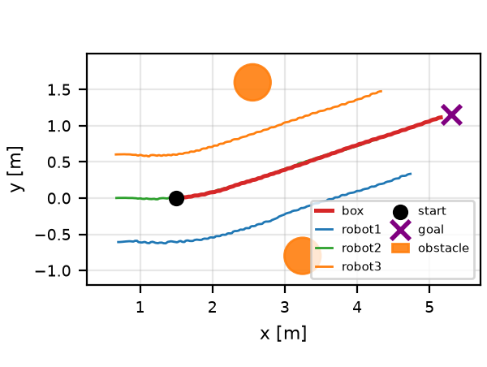
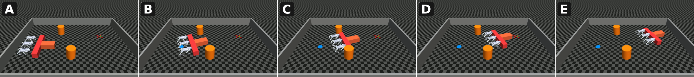
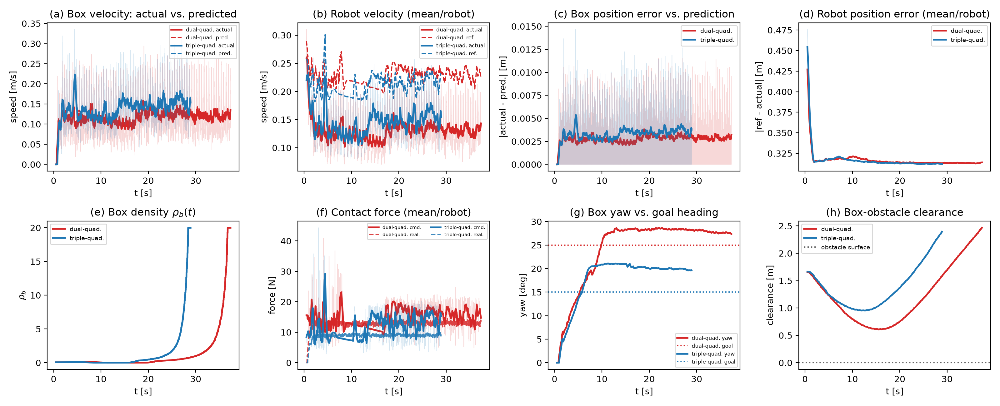
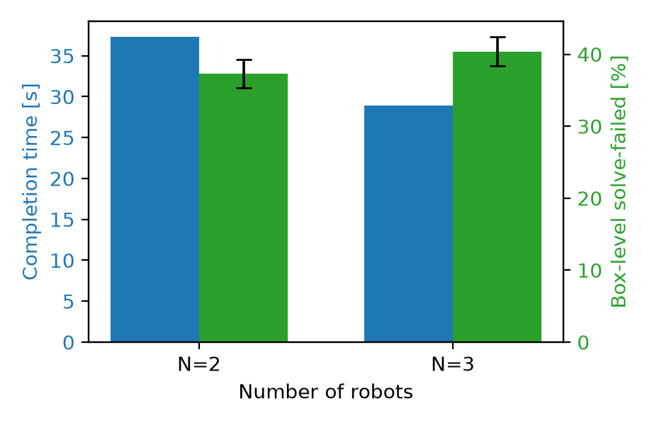

Density-safe loco-manipulation, for a team
This paper presents a hierarchical, density-safe framework for collaborative loco-manipulation, extending a single-robot contact-optimization architecture to a team of N quadrupedal robots pushing a shared box to a goal pose. A box-level MPC solves for each robot's push force and fixed contact offset under a control-density-transport constraint on the box's own pose, requiring only a start and goal pose rather than an externally supplied reference trajectory, with a static-obstacle term folded into the same density so the box's path is collision-aware by construction. At the robot level, each quadruped's own whole-body MPC tracks its assigned contact point while enforcing a second density constraint, threaded through as online parameters so that both a moving contact point and a teammate's current position are accounted for every control step.
The framework is validated on real Unitree Go2 contact and whole-body dynamics in MuJoCo, on the two hardest scenarios evaluated: two robots pushing a box through a 1.90 m gap between static obstacles, and three robots pushing a heavier T-box through a 2.49 m gap. Both scenarios converge to the goal pose with the box's true rotated-footprint clearance to each obstacle at or near zero margin — consistent with operating at the density constraint's own worst-case Minkowski boundary rather than with margin to spare — and both expose a classical RRT*-plus-tracking baseline, using the identical underlying MPCs with density avoidance disabled, failing to reach the goal in either case. A genuine limitation is also reported: the robot-level density constraint, layered on an already force-asymmetric push regime, was found to destabilize the whole-body controller independent of obstacle proximity, resolved for the reported results by relying on box-level avoidance alone.
Hierarchical, density-safe architecture
A box-level density MPC plans each robot's push force and contact offset from only a start and goal pose; a per-robot density NMPC then tracks its assigned, moving contact point on real Go2 whole-body and contact dynamics. Both levels certify safety through the same control-density-function formalism, evaluated against a live, per-step unsafe set that folds in static obstacles and — at the robot level — teammate positions.

The two hardest evaluated scenarios
Both scenarios push a box between two static obstacles at a heading matching the corridor diagonal, inside a closed rectangular boundary wall, on real Unitree Go2 leg-level NMPC and contact dynamics — not a kinematic or single-rigid-body approximation.
Dual-quadruped — N=2 robots, gap D = 1.90 m
clearance 0.00 m · t_conv 37.35 s

Converges in 37.35 s with the box's true rotated-footprint clearance at 0.00 m to the obstacle's physical radius — a graze at the density constraint's own worst-case Minkowski boundary, with no velocity discontinuity at closest approach, confirming a true near-miss rather than a hard collision.
Triple-quadruped — N=3 robots, gap D = 2.49 m
clearance 0.04 m · t_conv 28.92 s

Converges in 28.92 s with clearance 0.04 m — going from 2 to 3 contacts and a heavier, geometrically distinct T-box required no change to the box-level MPC formulation, only per-scenario contact geometry and inertial parameters.
Main results table
| Scenario (N) | D (m) | tconv (s) | Failed solves (%) | ρb,peak | Clearance (m) |
|---|---|---|---|---|---|
| Dual-quadruped (2) | 1.90 | 37.35 | 37.3 | 20.0 | 0.00 |
| Triple-quadruped (3) | 2.49 | 28.92 | 40.4 | 20.0 | 0.04 |
"Failed solves" is the fraction of box-level MPC solves that fell back to the last accepted command (not an emergency stop) rather than converging. Clearance is the worst-case distance from the box's true rotated footprint to each obstacle's physical radius over the whole run, not a center-distance proxy.
Controller-performance ablation
| Scenario | N (solves) | Solve time (ms) | Effort/step (N²m²) | Sep. (m) | Pos. RMSE (m) | Vel. RMSE (m/s) |
|---|---|---|---|---|---|---|
| Dual-quadruped | 629 | 1546.6 ± 1013.3 | 891.1 ± 143.2 | 0.730 ± 0.012 | 0.0036 | 0.0391 |
| Triple-quadruped | 569 | 1637.3 ± 981.1 | 1250.5 ± 255.4 | 0.603 ± 0.007 | 0.0043 | 0.0367 |
Solve time and effort/step are mean±SD over genuine box-level MPC solve events (solve time additionally Tukey-fence cleaned). Peak density ρb,peak = 20.0 in both scenarios (reported as a point value, not mean±SD, since it is a worst-case bound rather than a typical-case cost). Solve times of order 1 s against a 50 ms real-time budget are the paper's noted solver-cost limitation.


Additional scenario variants
Beyond the two headline gap-crossing results above, the same architecture was exercised on a range of obstacle layouts and maneuvers, at both team sizes. A curated subset is shown below — near-duplicate parameter sweeps, compressed re-encodes, and scratch/dev-iteration outputs are omitted (see report notes).
Dual-quadruped (N = 2)
2 Go2 robots, rectangular box.
Single obstacle, U-turn avoidance
Canonical single-obstacle demo: a dramatic, controlled U-turn (yaw peaks ~36°) around one obstacle, vs. a full spin (112°) with avoidance disabled.
Two-obstacle gap crossing (original)
The original two-obstacle gap demo the headline D=1.90m result was tightened from.
Tighter gap, D = 2.20 m
An intermediate gap width between the original and the D=1.90m headline result.
Triple-quadruped (N = 3)
3 Go2 robots, heavier T-box.
Single obstacle demo
Three-robot team pushing the T-box past one static obstacle.
Wider gap, D = 2.89 m
The wider precursor gap the D=2.49m headline result was later tightened (~14%) from.
Gap crossing + large turn
Gap-crossing geometry combined with an additional large heading change en route to goal.
vs. a classical RRT*-plus-tracking baseline
An RRT* path is planned once per scenario, inflated by the box's footprint and obstacle radius plus a safety pad, then converted to a pure-pursuit reference fed to the same box- and robot-level MPCs with density-avoidance disabled — obstacle avoidance delegated entirely to the planned path, as in a conventional plan-then-track pipeline.
RRT*+tracking, dual-quadruped
Gap-and-turn scenario under the RRT*-plus-tracking baseline (identical MPCs, density avoidance disabled).
RRT*+tracking, triple-quadruped
Gap-and-turn scenario under the RRT*-plus-tracking baseline (identical MPCs, density avoidance disabled).
| Scenario | Method | Reached goal | Compl. time (s) | Dist. cov. (%) | Zero-force steps (%) | Yaw drift (deg) | Min box–obs. (m) |
|---|---|---|---|---|---|---|---|
| Dual-quad. | Ours | yes | 37.35 | 100 | — | — | 0.00 |
| RRT* baseline | no | — | 37.8 | 8.1 | −47.3 to 10.5 | 0.50 | |
| Triple-quad. | Ours | yes | 28.92 | 100 | — | — | 0.04 |
| RRT* baseline | no | — | 41.4 | 45.4 | −67.6 to 0.3 | 0.51 |